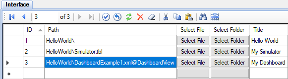

Dashboard Plugin muestra widgets (componentes de una interfaz) útiles en los tableros (dashboards). Por ejemplo, gráficos, datos actuales y cuadros personalizados. También imágenes de un circuito cerrado de televisión. En la configuración de cada tablero se puede especificar el recuento de columnas y la relación de aspecto del widget.
Primero debe realizar la secuencia general de instalación de complementos, y luego realizar estas acciones adicionales:
La configuración de cada tablero de control es almacenada en un archivo XML separado. El paquete de instalación del complemento contiene un tablero de ejemplo, DashboardExample1.xml. Los archivos de dashboards (tableros) pueden ser localizados en el directorio Interface, o en el directorio de almacenamiento de Webstation. Es preferible la 1ra opción.
Para mostrar los enlaces del tablero en el árbol explorador de Webstation, realice la siguiente configuración en el proyecto:

El sufijo de ruta @DashboardView indica el tipo de vista. Los derechos de acceso a los tableros se configuran utilizando la tabla Rights (Derechos) de la base de datos de configuración. Es similar a editar los derechos de vistas, tablas y esquemas.
Además, los archivos de tablero se pueden ubicar en el directorio de almacenamiento de Webstation. En este caso, haga clic en el elemento Dashboards del menú principal de Webstation para mostrar la lista de tableros disponibles. Siguen ejemplos de ubicaciones del tablero en el almacenamiento:
ScadaWeb\storage\allusers\Dashboard\ - tableros disponibles para todos los usuarios;
ScadaWeb\storage\myuser\Dashboard\ - tableros disponibles para MyUser.
Considere el contenido de un archivo de configuración de tableros:
<?xml version="1.0" encoding="utf-8" ?>
<DashboardConfig>
<DashboardOptions>
<Name>Dashboard Example 1</Name>
<ColumnCount>2</ColumnCount>
<AspectRatio>1.33</AspectRatio>
</DashboardOptions>
<Widgets>
<Widget type="Chart" cnlNums="101,102" viewIDs="2,2" period="2" />
<Widget type="Chart" cnlNums="101,103" viewIDs="2,2" mode="fixed" period="2" title="Sample Chart" config="PlgChartPro.xml" />
<Widget type="CurData" cnlNums="101,102,103,104,105,106,107,115" viewIDs="2,2,2,2,2,2,2,2" title="Sample Data" />
<Widget type="View" viewID="2" />
<Widget type="CustomUrl" url="https://www.youtube.com/embed/EEIk7gwjgIM" />
</Widgets>
</DashboardConfig>
La sección DashboardOptions contiene parámetros comunes de un tablero de control:
Name - nombre del panel de control,
ColumnCount - número de columnas de 1 a 4 (los widgets se muestran en una sola columna en las pantallas pequeñas de los móviles),
AspectRatio - relación entre el ancho del widget y su altura.
La sección Widgets contiene una lista de widgets que se muestran en un tablero. El número de widgets es arbitrario. Sin embargo, demasiados widgets en el mismo tablero pueden reducir el desempeño de la aplicación web.
Se soportan los widgets de los siguientes tipos:
Chart - curvas de los canales de entrada especificados vs tiempo,
CurData - tabla que contiene datos actuales de los canales de entrada especificados,
View - una vista con el ID especificado,
CustomUrl - página web personalizada.
La configuración de los widgets de los tipos Chart y CurData debe definir los números de los canales de entrada (channel numbers) y también los identificadores de las vistas (identifiers of the views) que incluyen estos canales de entrada. Se requieren las ID de las vistas para la validación de los derechos de acceso de los usuarios.